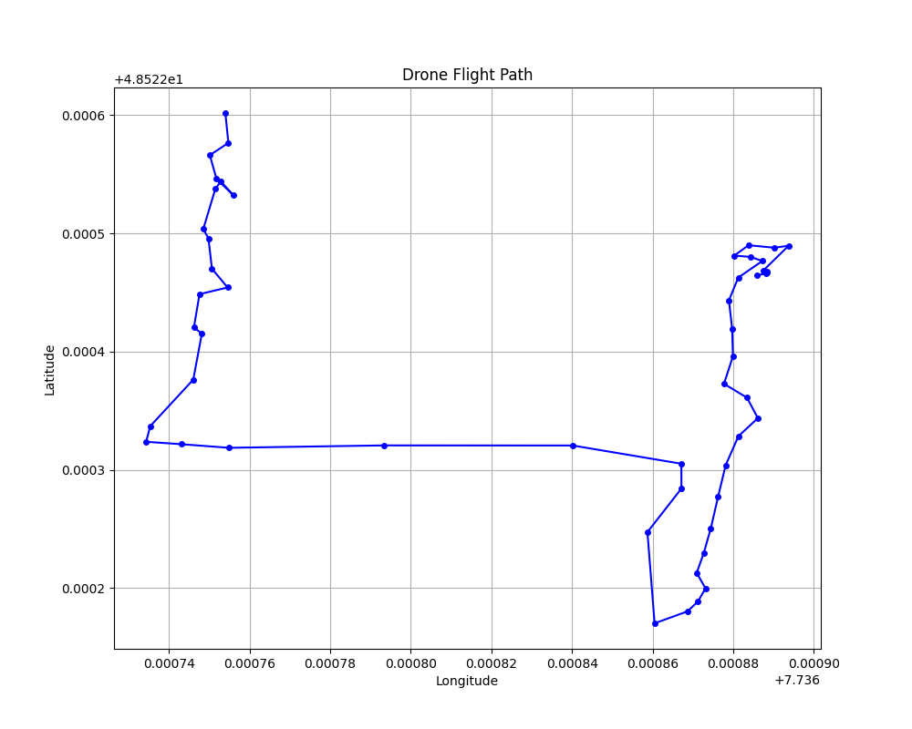
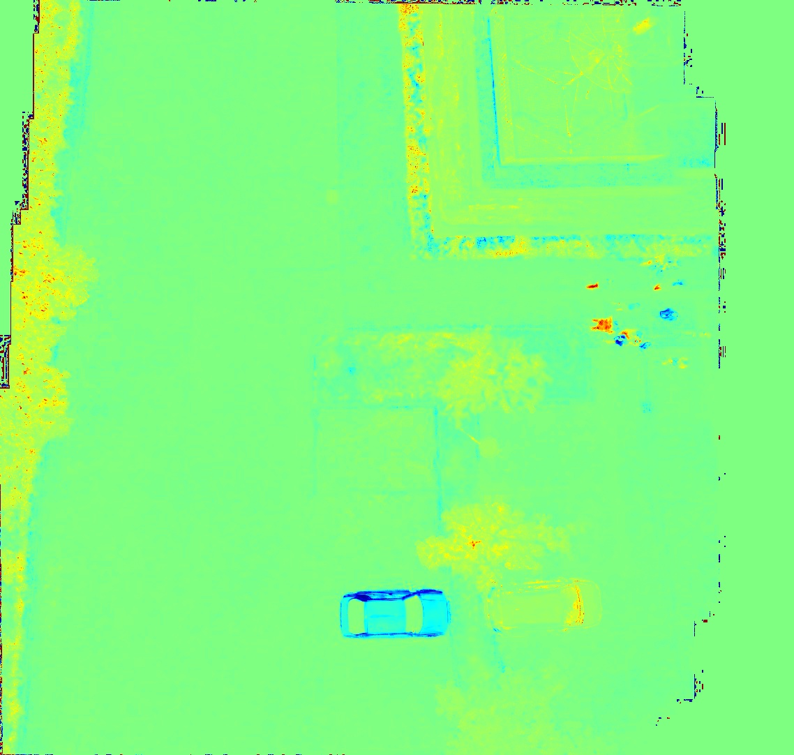
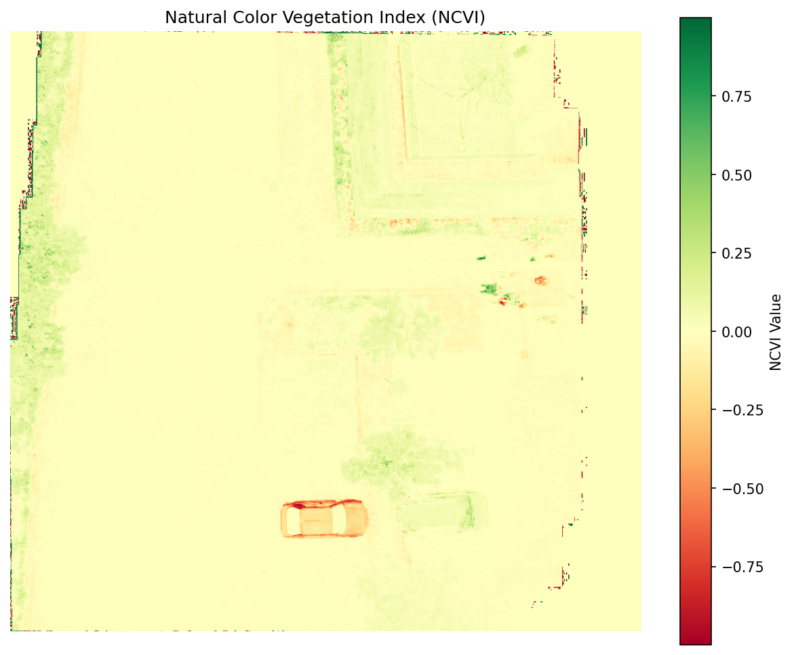

High-Fidelity
Drone Intelligence
Georeferenced orthomosaics, 3D Point Clouds, and vegetation indices powered by automated computer vision.
Flight Analytics
Dataset Overview
Total Images Processed
52 High-Res JPGs
Coverage Bounds
Lon [7.735, 7.737]
SfM Points Generated
366 (Sparse Mode)
GPS Flight Path

Georeferenced Orthomosaic
Interactive satellite map overlaid with the custom stitched orthomosaic using true GPS boundaries.
Interactive Leaflet Map
Scroll to zoom. Drag to pan. Observe the drone layer over OpenStreetMap.
3D Structure from Motion (SfM)
Point cloud reconstruction derived from triangulating 2D image features into 3D space using OpenCV.
Interactive WebGL
Left Click: Rotate | Right Click: Pan | Scroll: Zoom
Loading 3D Point Cloud...
Vegetation Analysis (NCVI)
Natural Color Vegetation Index highlighting plant health derived from the visible light spectrum.
NCVI Heatmap

Analytical Plot

Raw Drone Data
Explore the unedited source media and short telemetry video clips.